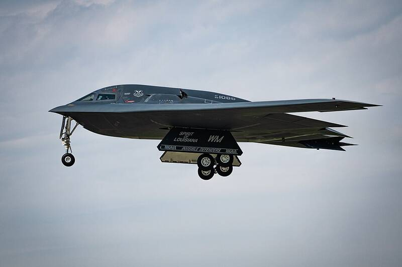

Whiteman AFB Missouri Missouri · Military base · 38.730°N, 93.548°W A B-2 Spirit taking off from Whiteman Air Force Base, 2025. Photo: Senior Airman Joshua Hastings, U.S. Air Force, Public domain (source) Home of the B-2 stealth bomber. 1 Open in the interactive Watcher Sources Whiteman Air Force Base Wikipedia